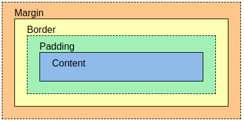
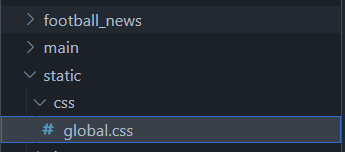

Pemrograman Berbasis Platform (CSGE602022) — diselenggarakan oleh Fakultas Ilmu Komputer Universitas Indonesia, Semester Ganjil 2025/2026
Tujuan Pembelajaran
Setelah menyelesaikan tutorial ini, mahasiswa diharapkan untuk dapat:
Memahami susunan tag pada HTML5
Mengetahui berbagai jenis tag HTML5
Memahami sintaks penulisan CSS
Pengenalan framework CSS, yaitu Bootstrap dan Tailwind
Memahami konsep static files pada Django
Memahami penggunaan selector pada CSS
Memahami implementasi update dan delete pada Django
Melakukan styling Django dengan Tailwind
Pengenalan HTML
HyperText Markup Language (HTML) adalah bahasa markup standar untuk dokumen agar dapat ditampilkan dalam browser web. HTML mendefinisikan struktur dari konten suatu website.
Silakan melakukan eksplorasi mandiri mengenai HTML pada referensi berikut.
Perbedaan antara HTML dan HTML5 dapat dibaca pada referensi berikut.
Pengenalan CSS
Apa itu CSS?
Cascading Style Sheets (CSS) adalah bahasa yang digunakan untuk mendeskripsikan tampilan dan format dari sebuah situs web yang ditulis pada markup language (seperti HTML). CSS berguna untuk membuat tampilan situs web menjadi lebih menarik.
Untuk mempelajari perbedaan antara CSS dan CSS3 dapat dibaca pada referensi berikut.
Cara Penulisan CSS
Secara umum, CSS dapat dituliskan dalam bentuk sebagai berikut.
selector { properties:value;}
Silakan melakukan eksplorasi mandiri terkait CSS pada referensi berikut.
Terdapat tiga jenis cara penulisan CSS:
Inline Styles
Internal Style Sheet
External Style Sheet
Silakan melakukan eksplorasi mandiri tentang ketiga jenis CSS tersebut pada referensi berikut.
Perlu diperhatikan, jika kamu membuat jenis External Style Sheet, kamu perlu menambahkan tag{% load static %} pada halaman HTML kamu. Contohnya seperti potongan kode di bawah ini.
Hal ini dapat terjadi karena CSS merupakan static files di Django. Static files akan dijelaskan pada bagian selanjutnya.
Catatan Tambahan
Jika terdapat lebih dari satu style yang didefinisikan untuk suatu elemen, maka style yang akan diterapkan adalah yang memiliki prioritas yang lebih tinggi. Berikut ini urutan prioritasnya, nomor 1 yang memiliki prioritas paling tinggi.
Inline style
External dan internal style sheets
Browser default
Static files pada Django
Pada framework Django, terdapat file-file yang disebut dengan static files. Static files merupakan file-file pendukung HTML pada suatu situs web. Contoh static files adalah CSS, JavaScript, dan gambar.
Pengaturan untuk static files terletak pada filesettings.py:
STATIC_ROOT yang menentukan absolute path ke direktori static files ketika menjalankan perintah collectstatic pada proyek. STATIC_ROOT ini nantinya berguna untuk melakukan menyediakan path konten statis pada akses production (DEBUG=False pada settings.py)
STATIC_URL yang merupakan URL yang dapat diakses publik untuk memperoleh static files tersebut. Contohnya: http://localhost:8000/static/image/example-image.png
Perintah collectstatic adalah perintah untuk mengumpulkan static files dari semua app sehingga mempermudah akses untuk semua app.
Penjelasan lebih lengkap mengenai static files dapat kamu baca pada referensi berikut.
Selector pada CSS
Pada tutorial ini, kita akan mengenak tiga jenis selector: Element Selector, ID Selector, dan Class Selector.
Element Selector
Element Selector memungkinkan kita mengubah properti untuk semua elemen yang memiliki tag HTML yang sama.
Contoh penggunaan Element Selector: html <body> <div> <h1>Aku h1 ges</h1> <h2>Aku h2 ges, beda sama h1 :D</h2> </div> ... </body>
Kita dapat menggunakan element sebagai selector dalam file CSS. Element selector menggunakan format [id_name] (tanpa diawali oleh sebuah simbol)
h1 { color: #5bc933; font-family: "Times New Roman"; font-style: normal;}
ID Selector
ID selector menggunakan ID pada tag sebagai selector-nya. ID bersifat unik dalam satu halaman web. ID dapat ditambahkan pada halaman template HTML.
Contoh penggunaan ID Selector pada template HTML:
<body><div id="header"><h1>Bermain bersama ID header</h1></div> ...</body>
Kemudian, kita dapat menggunakan ID tersebut sebagai selector dalam file CSS. ID selector menggunakan format #[id_name] (selalu diawali #) html #header { background-color: #a3b90e; margin-top: 0; padding: 20px 20px 20px 40px; }
Class Selector
Class Selector memungkinkan kita untuk mengelompokkan elemen dengan karakteristik yang sama.
Contoh penggunaan Class Selector pada template HTML:
...<div id="main"><div class="parent_content"><p class="date">Tanggal 9 September 2024</p><h2><a href="">Subjek: Keseruan PBP</a></h2><p id="content_1">Materi PBP sangat seru!</p></div><div class="parent_content"><p class="date">Tanggal 10 September 2024</p><h2><a href="">Subjek: Review PBP</a></h2><p id="content_2">Biar lebih gacor aku review materi PBP</p></div><div class="parent_content"><p class="date">Tanggal 11 September 2024</p><h2><a href="">Subjek: Ikut Tutorial PBP</a></h2><p id="content_3">Tutorial PBP sangat seru!</p></div></div>...
Kemudian, kita dapat menggunakan Class tersebut sebagai selector dalam file CSS. Class selector menggunakan format .[class_name] (diawali .)
.content_section { background-color: #112a33; margin-bottom: 30px; color: #0F0F0F; font-family: cursive; padding: 20px 20px 20px 40px;}
Untuk lebih memahami terkait CSS Selector Reference, kamu dapat membaca referensi berikut.
Tips & trik CSS
Mengenal Combinator pada CSS
Combinator dalam CSS menghubungkan dua atau lebih selector untuk merincikan lebih lanjut elemen-elemen yang di-select.
Terdapat empat combinators pada CSS. Berikut ringkasan pemakaiannya:
Combinator
Contoh pemakaian
Penjelasan contoh
Descendant selector (space)
div p
Menyeleksi semua elemen p yang merupakan keturunan dari elemen div
Child selector (>)
div > p
Menyeleksi semua elemen p yang merupakan anak dari elemen div
Adjacent sibling selector (+)
div + p
Menyeleksi elemen p pertama yang berada tepat setelah elemen div (harus memiliki elemen induk yang sama)
General sibling selector (~)
div ~ p
Menyeleksi semua elemen p yang sejajar dan berada setelah elemen div
Silakan melakukan eksplorasi mandiri mengenai combinator melalui referensi berikut.
Mengenal Pseudo-class pada CSS
Pseudo-class digunakan untuk mendefinisikan state khusus dari suatu elemen. Sintaks pemakaian pseudo-class adalah sebagai berikut:
selector:pseudo-class { property:value;}
Beberapa contoh pseudo-class: | Pseudo-class | Mengaplikasikan style pada .. | | ——– | ——– | | :link | tautan yang belum pernah dikunjungi | | :visited | tautan yang sudah pernah dikunjungi | | :hover | saat pengguna mengarahkan kursor di atas elemen tersebut | | :active | saat elemen diaktifkan (biasanya saat pengguna mengklik elemen tersebut) | | :focus | saat elemen fokus (seperti saat pengguna mengklik input field) | | :checked | elemen yang telah dicentang | | :disabled | elemen yang telah dibuat tidak responsif (misalnya tombol yang tidak bisa diklik) |
Silakan melakukan eksplorasi mandiri terkait pseudo-class melalui referensi ini.
Mengenal Box Model pada CSS

image
Box model pada CSS pada dasarnya merupakan suatu box yang membungkus setiap elemen HTML dan terdiri atas:
Content: isi dari box (tempat terlihatnya teks dan gambar)
Padding: mengosongkan area di sekitar konten (transparan)
Border: garis tepian yang membungkus konten dan padding-nya
Margin: mengosongkan area di sekitar border (transparan)
Silakan melakukan eksplorasi mandiri terkait margin, border, dan padding melalui referensi berikut.
Pengenalan Bootstrap & Tailwind
Pada bidang pengembangan web, terdapat banyak framework CSS yang sering digunakkan. Fungsi sebuah framework adalah untuk mempermudah pekerjaan programmer pada saat mengerjakan pekerjaan mereka. Framework CSS yang populer saat ini adalah Bootstrap dan juga Tailwind. Kedua framework ini memberikan banyak kelebihan dibandingkan CSS yang biasa kita gunakan. Berikut adalah kelebihan-kelebihan penggunaan framework yang diperoleh dibandingkan CSS biasa:
Proses Pengembangan Lebih Cepat: Framework seperti Bootstrap menyediakan komponen siap pakai sehingga tanpa harus menulis kode CSS dari awal.
Responsif secara Bawaan: Framework seperti Bootstrap dan Tailwind telah dirancang dengan responsif.
Kustomisasi Mudah: Tailwind memungkinkan kustomisasi yang mendalam. Sementara itu, Bootstrap juga menawarkan opsi kustomisasi tetapi dengan pendekatan yang lebih terbatas.
Skalabilitas Besar: Framework CSS memberikan struktur yang baik untuk proyek yang berkembang seiring waktu.
Bootstrap dan Tailwind tentu saja sebagai framework memiliki perbedaan yang signifikan antara satu sama lain, yaitu:
Tailwind
Bootstrap
Tailwind CSS membangun tampilan dengan menggabungkan kelas-kelas utilitas yang telah didefinisikan sebelumnya.
Bootstrap menggunakan gaya dan komponen yang telah didefinisikan, yang memiliki tampilan yang sudah jadi dan dapat digunakan secara langsung.
Tailwind CSS memiliki file CSS yang lebih kecil sedikit dibandingkan Bootstrap dan hanya akan memuat kelas-kelas utilitas yang ada
Bootstrap memiliki file CSS yang lebih besar dibandingkan dengan Tailwind CSS karena termasuk banyak komponen yang telah didefinisikan.
Tailwind CSS memiliki memberikan fleksibilitas dan adaptabilitas tinggi terhadap proyek
Bootstrap sering kali menghasilkan tampilan yang lebih konsisten di seluruh proyek karena menggunakan komponen yang telah didefinisikan.
Tailwind CSS memiliki pembelajaran yang lebih curam karena memerlukan pemahaman terhadap kelas-kelas utilitas yang tersedia dan bagaimana menggabungkannya untuk mencapai tampilan yang diinginkan.
Bootstrap memiliki pembelajaran yang lebih cepat untuk pemula karena dapat mulai dengan komponen yang telah didefinisikan.
Responsive Web Design
Responsive web design merupakan metode sistem desain web yang memiliki tujuan untuk menghasilkan tampilan web yang terlihat baik pada seluruh perangkat seperti desktop, tablet, mobile, dan sebagainya. Responsive web design tidak mengubah isi dari situs web, tetapi hanya mengubah tampilan dan penataan pada setiap perangkat agar sesuai dengan lebar layar dan kemampuan perangkat tersebut. Dalam responsive web design tampilan-tampilan tertentu membutuhkan bantuan CSS (seperti mengecilkan atau membesarkan) suatu elemen.
Salah satu cara untuk menguji apakah suatu situs web menggunakan responsive web design adalah dengan mengakses situs web tersebut dan mengaktifkan fitur Toggle Device Mode pada browser. Fitur ini memungkinkan kamu untuk melihat bagaimana situs web tersebut ditampilkan pada berbagai perangkat, seperti komputer, tablet, atau smartphone, tanpa harus mengubah ukuran jendela browser.
Berikut adalah cara untuk mengakses fitur tersebut pada browserGoogle Chrome. * Windows/Linux: Tekan CTRL + SHIFT + I untuk membuka Dev Tools, lalu tekan CTRL + SHIFT + M untuk mengaktifkan Toggle Device Mode. * Mac : Command + Shift + M
Cara lain yang lebih praktis adalah dengan melakukan klik kanan pada browser dan memilih Inspect Element/Inspect untuk membuka Dev Tools yang berguna.
Untuk mempelajari lebih lengkap mengenai Reponsive Web Design, kamu dapat membuka referensi ini.
Tutorial: Menambahkan Tailwind ke Aplikasi
Pada tutorial ini, kita akan berfokus menggunakan Tailwind dalam melakukan styling terhadap aplikasi Django kita.
Buka project Django kalian (football-news), lalu buka filebase.html yang telah dibuat sebelumnya pada templates folder yang berada di root project kalian.
Didalam templates/base.html, tambahkan tag <meta name="viewport"> agar halaman web kamu dapat menyesuaikan ukuran dan perilaku perangkat mobile (apabila belum).
<head> {% block meta %}<meta charset="UTF-8"/><meta name="viewport" content="width=device-width, initial-scale=1"> {% endblock meta %}</head>
Untuk menyambungkan template django dengan taiwind, kita dapat memanfaatkan script CDN (Content Delivery Network) dari Tailwind untuk diletakkan di dalam html template Django kita. Di base.html, kamu perlu menambahkan script cdn tailwind di bagian head.
<head>{% block meta %}<meta charset="UTF-8"/><meta name="viewport" content="width=device-width, initial-scale=1">{% endblock meta %}<script src="https://cdn.tailwindcss.com"></script></head>
Tutorial: Menambahkan Bootstrap ke Aplikasi (Skip jika Memilih Tailwind)
Warning
Penting: Jika kamu memilih Bootstrap, kamu harus skip tutorial Tailwind karena dapat terjadi konflik kelas CSS jika digabungkan dengan Bootstrap.
Buka project Django kalian (football-news), lalu buka filebase.html yang telah dibuat sebelumnya pada templates folder yang berada di root project kalian.
Didalam templates/base.html, tambahkan tag <meta name="viewport"> agar halaman web kamu dapat menyesuaikan ukuran dan perilaku perangkat mobile (apabila belum).
<head> {% block meta %}<meta charset="UTF-8"/><meta name="viewport" content="width=device-width, initial-scale=1"> {% endblock meta %}</head>
Tambahkan Bootstrap CSS dan juga JS.
CSS:html <head> {% block meta %} ... {% endblock meta %} <link href="https://cdn.jsdelivr.net/npm/bootstrap@5.3.2/dist/css/bootstrap.min.css" rel="stylesheet" integrity="sha384-T3c6CoIi6uLrA9TneNEoa7RxnatzjcDSCmG1MXxSR1GAsXEV/Dwwykc2MPK8M2HN" crossorigin="anonymous"> </head>
(Opsional) Apabila kalian ingin menggunakan dropdowns, popover, tooltips yang disediakan framework Bootstrap, maka kalian perlu menambahkan 2 baris script JS ini dibawah script JS yang sudah kalian buat sebelumnya.
Buka main.html yang berada pada subdirektori main/templates. Pada loop news_list, perbarui potongan kode berikut untuk memunculkan tombol edit pada setiap artikel berita. ```html … {% for news in news_list %}
{{ news.get_category_display }}{% if news.is_featured %} | Featured{% endif %}{% if news.is_news_hot %} | Hot{% endif %} | {{ news.created_at|date:“d M Y H:i” }} | Views: {{ news.news_views }}
{% if news.thumbnail %} {% endif %}
{{ news.content|truncatewords:25 }}…
{% if user.is_authenticated and news.user == user %} {% endif %}
{% endfor %} … ```
Jalankan proyek Django-mu dengan perintah python manage.py runserver dan bukalah http://localhost:8000 di browser favoritmu. Setelah login, cobalah untuk klik tombol edit pada suatu news dan ubah datanya sesukamu. Apabila perubahan tersimpan dan terlihat pada halaman utama aplikasi tanpa error, maka selamat, kamu berhasil menambahkan fitur edit!
Tutorial: Menambahkan Fitur Hapus News pada Aplikasi
Berikut ini hal-hal yang perlu kamu lakukan untuk menambahkan fitur menghapus data news:
Buat fungsi baru dengan nama delete_news yang menerima parameter request dan id pada views.py di folder main untuk menghapus data news. Kamu dapat menggunakan kode berikut. > Jangan lupa untuk memahami isi kodenya ya😅 python def delete_news(request, id): news = get_object_or_404(News, pk=id) news.delete() return HttpResponseRedirect(reverse('main:show_main'))
Buka urls.py yang ada pada foldermain dan import fungsi yang sudah kamu buat tadi. python from main.views import delete_news
Tambahkan path url ke dalam urlpatterns untuk mengakses fungsi yang sudah diimpor. python ... path('news/<uuid:id>/delete', delete_news, name='delete_news'), ...
Bukalah berkas main.html yang ada pada folder main/templates dan pada loop news_list, perbarui potongan kode berikut agar terdapat tombol hapus untuk setiap artikel berita. ```html … {% for news in news_list %}
{{ news.get_category_display }}{% if news.is_featured %} | Featured{% endif %}{% if news.is_news_hot %} | Hot{% endif %} | {{ news.created_at|date:“d M Y H:i” }} | Views: {{ news.news_views }}
{% if news.thumbnail %} {% endif %}
{{ news.content|truncatewords:25 }}…
{% if user.is_authenticated and news.user == user %} {% endif %}
{% endfor %} … ```
Jalankan proyek Django-mu dengan perintah python manage.py runserver dan bukalah http://localhost:8000 di browser favoritmu. Setelah login, cobalah untuk hapus data suatu news dan refresh halaman. Apabila news tersebut hilang dari halaman utama aplikasi kamu tanpa error, maka selamat, kamu berhasil menambahkan fitur delete!
Tutorial: Menambahkan Navigation Bar pada Aplikasi
Navigation Bar (navbar) adalah elemen yang biasanya digunakan untuk menavigasi berbagai halaman atau fitur dalam sebuah aplikasi web. Navbar biasanya ditempatkan di bagian atas halaman dan berisi tautan atau tombol yang mengarah ke halaman-halaman lain dalam aplikasi.
Buatlah berkas HTML baru dengan nama navbar.html pada folder templates/ di root directory. Isi dari navbar.html dapat kamu isi dengan template berikut. ```html
```
Kemudian, tautkan navbar tersebut ke dalam main.html yang berada di subdirektori main/templates/ dengan menggunakan tags include: html {% extends 'base.html' %} {% block content %} {% include 'navbar.html' %} ... {% endblock content%}
Tanda ... menandakan kode lainnya dalam berkas yang tidak perlu diubah
Tutorial: Konfigurasi Static Files pada Aplikasi
Pada settings.py, tambahkan middleware WhiteNoise.
...MIDDLEWARE = ['django.middleware.security.SecurityMiddleware','whitenoise.middleware.WhiteNoiseMiddleware', #Tambahkan tepat di bawah SecurityMiddleware ...]...
Dengan menambahkan middleware WhiteNoise pada settings.py, Django dapat mengelola file statis secara otomatis dalam mode produksi (DEBUG=False) tanpa perlu konfigurasi yang kompleks. Hal ini berguna agar file statis tersebut bisa diakses di deployment kamu sebab secara default, apabila DEBUG=False maka Django tidak akan menyediakan akses ke file statis.
Pada settings.py, pastikan variabel STATIC_ROOT, STATICFILES_DIRS, dan STATIC_URL dikonfigurasikan seperti ini (jika belum ada, bisa ditambahkan saja):
...STATIC_URL ='/static/'if DEBUG: STATICFILES_DIRS = [ BASE_DIR /'static'# merujuk ke /static root project pada mode development ]else: STATIC_ROOT = BASE_DIR /'static'# merujuk ke /static root project pada mode production...
Styling pada Aplikasi dengan Tailwind dan External CSS
Menambahkan global.css
Buatlah fileglobal.css di /static/css pada root directory seperti ini:

image
Pada fileglobal.css ini, kamu bisa menambahkan kelas custom atau style css yang sudah kamu definisikan sendiri.
Menghubungkan global.css dan script Tailwind ke base.html
Agar style CSS yang ditambahkan di global.css dapat digunakan dalam template Django, kamu perlu menambahkan file tersebut ke base.html. Modifikasi filebase.html kamu seperti berikut:
Modifikasi fileglobal.css pada static/css/global.css seperti berikut:
.form-style form input, form textarea, form select {width:100%;padding:0.5rem;border:2pxsolid#bcbcbc;border-radius:0.375rem;}.form-style form input:focus, form textarea:focus, form select:focus {outline:none;border-color:#16a34a;box-shadow:0003px#16a34a;}.form-style input[type="checkbox"] {width:1.25rem;height:1.25rem;padding:0;border:2pxsolid#d1d5db;border-radius:0.375rem;background-color:white;cursor:pointer;position:relative;appearance:none;-webkit-appearance:none;-moz-appearance:none;}.form-style input[type="checkbox"]:checked {background-color:#16a34a;border-color:#16a34a;}.form-style input[type="checkbox"]:checked::after {content:'✓';position:absolute;top:50%;left:50%;transform:translate(-50%,-50%);color:white;font-weight:bold;font-size:0.875rem;}.form-style input[type="checkbox"]:focus {outline:none;border-color:#16a34a;box-shadow:0003pxrgba(22,163,74,0.1);}
CSS di atas digunakan untuk mengatur tampilan form yang memiliki class form-style. Kode CSS ini akan membuat semua input memiliki lebar penuh, padding, border abu-abu, dan sudut melengkung. Ketika pengguna mengklik atau fokus pada input, border akan berubah warna menjadi hijau dengan efek shadow untuk menunjukkan bahwa input tersebut sedang aktif. ### Styling Navbar Setelah membuat navbar dasar, sekarang kita akan menambahkan styling agar navbar terlihat lebih menarik dan responsif. Perbarui kode navbar pada template navbar.html menjadi seperti berikut:
Navbar di atas menggunakan Tailwind CSS dengan posisi fixed di atas halaman. Struktur navbar terdiri dari title di kiri, menu navigasi di tengah, dan user section di kanan. Pada tampilan mobile, menu navigasi disembunyikan dan diganti dengan tombol hamburger. JavaScript digunakan untuk menampilkan/menyembunyikan mobile menu saat tombol diklik.
Untuk tutorial kali ini Anda tidak harus dapat memahami cara kerja <script>. Penggunaan <script> akan Anda pelajari di tutorial 5 minggu depan.
Berikut beberapa referensi tambahan terkait cara membuat navigation bar yang dapat kamu gunakan:
Menggunakan Tailwind: dapat diakses melalui tautan berikut
Menggunakan Bootstrap: dapat diakses melalui tautan berikut
Menggunakan CSS manual: dapat diakses melalui tautan berikut
Styling Halaman Login
Ubah berkas login.html pada subdirektori main/templates/ menjadi seperti berikut:
Note: Ini adalah contoh tampilan dari elemen card_news.html
Selanjutnya, kita memerlukan tampilan jika news masih kosong. Pilihlah satu foto atau iconempty dan namakan no-news.png. Kamu dibebaskan memilih foto apa saja. Tambahkan foto no-news.png tadi ke direktori static/image yang berada di root project.
Setelah semuanya selesai, kita perlu menggunakan card_news.html dan no-news.png tersebut ke template main.html. Pada directory main/templates, modifikasi main.html seperti ini: ```html {% extends ‘base.html’ %} {% load static %}
{% block meta %}
<p>Football News</p>
{% endblock meta %}
{% block content %} {% include ‘navbar.html’ %}
<!-- Header Section -->
<div class="mb-8">
<h1 class="text-3xl font-bold text-gray-900 mb-2">Latest Football News</h1>
<p class="text-gray-600">Stay updated with the latest football stories and analysis</p>
</div>
<!-- Filter Section -->
<div class="flex flex-col sm:flex-row sm:items-center sm:justify-between mb-8 bg-white rounded-lg border border-gray-200 p-4">
<div class="flex space-x-3 mb-4 sm:mb-0">
<a href="?" class="{% if request.GET.filter == 'all' or not request.GET.filter %} bg-green-600 text-white{% else %}bg-white text-gray-700 border border-gray-300{% endif %} px-4 py-2 rounded-md font-medium transition-colors hover:bg-green-600 hover:text-white">
All News
</a>
<a href="?filter=my" class="{% if request.GET.filter == 'my' %} bg-green-600 text-white{% else %}bg-white text-gray-700 border border-gray-300{% endif %} px-4 py-2 rounded-md font-medium transition-colors hover:bg-green-600 hover:text-white">
My News
</a>
</div>
{% if user.is_authenticated %}
<div class="text-sm text-gray-500">
Last login: {{ last_login }}
</div>
{% endif %}
</div>
<!-- News Grid -->
{% if not news_list %}
<div class="bg-white rounded-lg border border-gray-200 p-12 text-center">
<div class="w-32 h-32 mx-auto mb-4">
<img src="{% static 'image/no-news.png' %}" alt="No news available" class="w-full h-full object-contain">
</div>
<h3 class="text-lg font-medium text-gray-900 mb-2">No news found</h3>
<p class="text-gray-500 mb-6">Be the first to share football news with the community.</p>
<a href="{% url 'main:create_news' %}" class="inline-flex items-center px-4 py-2 bg-green-600 text-white rounded-md hover:bg-green-700 transition-colors">
Create News
</a>
</div>
{% else %}
<div class="grid grid-cols-1 md:grid-cols-2 lg:grid-cols-3 gap-6">
{% for news in news_list %}
{% include 'card_news.html' with news=news %}
{% endfor %}
</div>
{% endif %}
Tutorial ini dikembangkan berdasarkan PBP Ganjil 2025 dan PBP Ganjil 2024 yang ditulis oleh Tim Pengajar dan Asisten Dosen Pemrograman Berbasis Platform 2025 dan 2024. Segala tutorial serta instruksi yang dicantumkan pada repositori ini dirancang sedemikian rupa sehingga mahasiswa yang sedang mengambil mata kuliah Pemrograman Berbasis Platform dapat menyelesaikan tutorial saat sesi lab berlangsung.